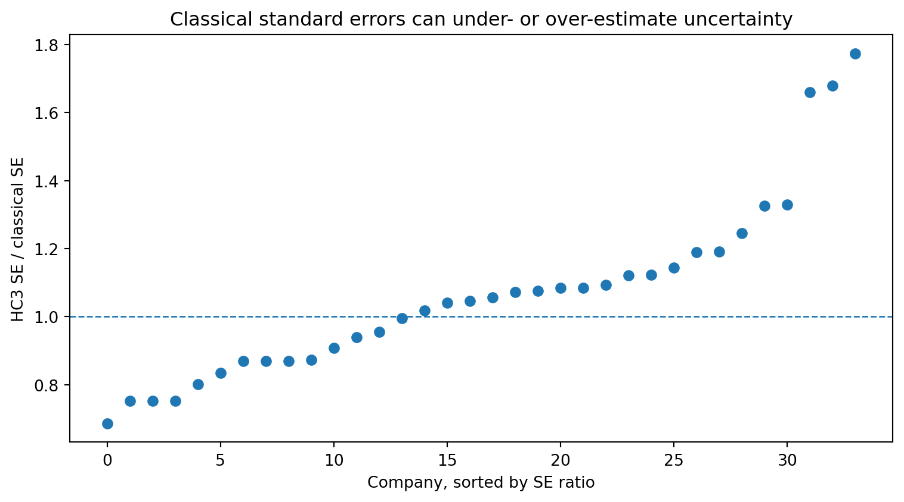
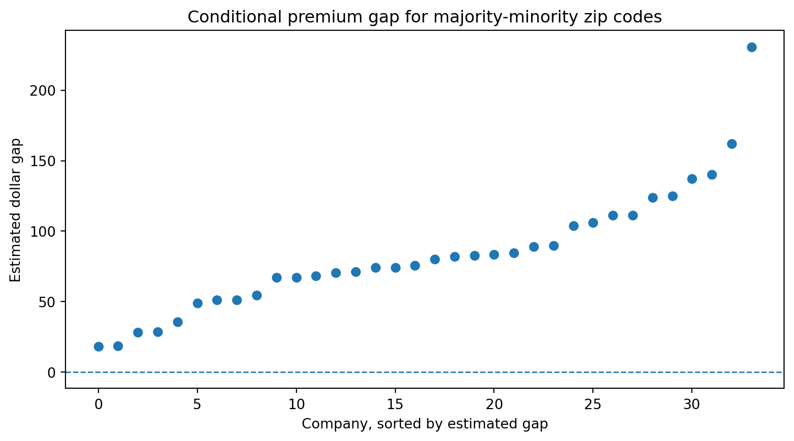
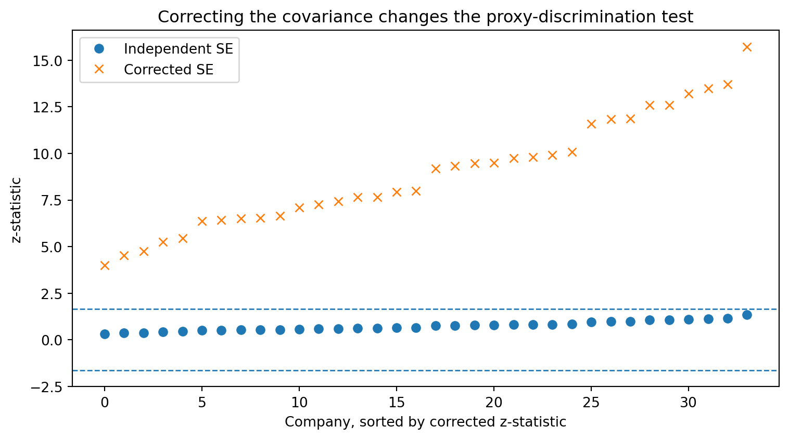

Case Study 3: Fairness Testing for Algorithmic Pricing
A practical framework for fair algorithmic pricing
Author
Fei Huang
Published
June 7, 2026
Pathway companion
Read Step 4: Audit the system first for the qualitative audit protocol. This case study implements CDP and proxy-discrimination testing on Illinois auto insurance quotes.
Background
Regulatory agencies have increasingly required firms to assess whether algorithmic pricing systems produce unfair outcomes for protected groups. For example, recent regulatory proposals in Colorado and New York (Colorado Division of Insurance 2023; New York State Department of Financial Services 2024) require insurers to evaluate whether pricing algorithms and predictive models produce discriminatory pricing outcomes.
Many fairness audits rely on regression-based methods. A common approach is to compare pricing outcomes across protected groups after controlling for legitimate risk factors and then evaluate whether any remaining disparity falls within an acceptable tolerance.
This case study illustrates how regression-based fairness audits can be conducted for deterministic pricing outputs. It is based on the empirical analysis in Fairness Testing for Algorithmic Pricing by Huang and Hooker (2026). In particular, we focus on two fairness criteria that are closely related to current regulatory proposals:
Conditional demographic parity (CDP). after controlling for legitimate risk factors, do pricing outcomes differ systematically across protected groups?
Proxy discrimination (PD). does a rating variable act as a statistical proxy for a protected attribute?
A distinctive feature of algorithmic pricing systems is that they are often deterministic. The same profile submitted to the same algorithm produces the same price. As a result, residuals from an audit regression represent approximation error rather than sampling variability. This distinction has important implications for statistical inference and forms the central motivation for the empirical analysis in this case study.
To illustrate the audit framework, we use the ProPublica Illinois auto insurance dataset (Larson et al. 2017), which contains quoted premiums from multiple insurers across Illinois zip codes.
The analysis is designed to show how to run a regression-based fairness audit, not to deliver filing-ready compliance conclusions for any named insurer.
Huang and Hooker (2026) organises fairness testing as an end-to-end Plan → Audit → Decide → Improve workflow. Design choices should be fixed before examining outcomes.
Plan (pre-audit setup)
Select a fairness criterion. CDP for system-level price gaps after controlling for legitimate factors. PD when a specific rating variable may proxy the protected attribute.
Specify the protected attributeA. Here, a majority-minority zip-code indicator (a proxied attribute at zip level).
Specify legitimate rating factorsX_\ell. Here, log state risk and a Chicago indicator.
Pre-specify tolerances and decision rules. Significance level, TOST margins for CDP, substantive shift threshold for PD (see Audit parameters).
Design a representative quote sample. Standardised profiles submitted within a short window.
Audit
Collect deterministic pricing outputs and run the criterion-specific regression tests using corrected standard errors (HC3 for CDP. Cross-covariance for PD coefficient shifts).
Decide (three outcomes)
Verdict
Meaning
Typical next step
Pass
Confidence interval lies entirely within the tolerance band (positive evidence of compliance
Document and monitor
Fail
Confidence interval lies entirely outside the tolerance band (material disparity
Remediation and re-test
Insufficient information
Interval is too wide to confirm pass or fail
Collect more data, then re-audit
PD uses a two-part rule (statistical significance plus a minimum relative shift) rather than TOST. See Proxy discrimination audit.
Improve
Failed or unclear audits trigger review of driver variables, model recalibration, or expanded sampling before re-testing.
For practitioners
This case study applies one illustrative audit design from Huang and Hooker (2026) to Illinois auto quotes. In your own market you must choose:
Fairness criterion (CDP, PD, or another rule required by law)
Protected attributeA (directly observed or responsibly proxied)
Legitimate rating factorsX_\ell (as recognised by your regulator)
Tolerance margins (for example, Colorado’s 5% price-gap discussion and standard 0.80 adverse-impact ratio)
Suspected proxy variables for PD screens
Quoted premiums here are deterministic algorithm outputs, so classical OLS standard errors are generally not valid. Use the corrected estimators shown below. Results are a teaching illustration using zip-level data and a proxied protected attribute, not a definitive regulatory finding about any company.
Scope of this case study
ProPublica Illinois auto quotes, company-level audits
CDP via log-premium regression + TOST. PD illustration for log_risk
Corrected inference (HC3. PD cross-covariance)
Not covered here. GLM audit specifications, formal sample-size planning, multi-proxy screens, or insurer-specific filing conclusions. See Huang and Hooker (2026) for the full framework.
Case Study Setup
Data and audit setting
The empirical analysis is conducted at the company level. For each insurer, we observe quoted premiums across Illinois zip codes. The goal is to illustrate how regression-based fairness audits can be applied to deterministic pricing outputs.
minority, indicator equal to 1 if the zip code is majority-minority
state_risk, aggregate loss cost per insured vehicle
chicago, indicator for Chicago zip codes
companies_name, insurer name
In the analysis below, each insurer is audited separately. The protected attribute is represented by the majority-minority zip-code indicator (A_z = 1), while state_risk and chicago are used as legitimate rating factors (X_\ell). Symbols are defined in Notation.
Audit parameters
The table below maps pre-specified audit parameters to their regulatory interpretation. Values are fixed in code before running company-level tests.
Parameter
Code value
Role
Significance level
ALPHA = 0.05
90% confidence intervals for TOST (1 - 2\alpha)
Minimum zip codes per company
MIN_OBS = 50
Exclude thin company samples from company-level tests
CDP dollar tolerance
DELTA_PCT = 0.05
5% of mean premium (Colorado draft guidance)
CDP ratio tolerance
TAU = 0.80
Standard 0.80 adverse-impact ratio band
PD substantive threshold
RHO_MIN = 0.10
Flag only if relative coefficient shift \geq 10\%
Import packages and define audit parameters
The following code imports the required Python packages and sets the parameters above.
The following functions implement the calculations used throughout the CDP and PD audits. The code is folded for readability but can be expanded if desired.
Number of observations: 31382
Number of variables: 15
zipcode
chicago
minority
companies_name
name
bi_policy_premium
pd_policy_premium
state_risk
white_non_hisp_pct
risk_difference
combined_premium
minority_flag
log_risk
log_premium
excess_premium
0
60002
0.0
False
State Farm Fire & Cas Co
STATE FARM GRP
414
0.0
200.692503
88.6
213.307497
414.0
0
5.301774
6.025866
2.062857
1
60002
0.0
False
Metropolitan Grp Prop & Cas Ins Co
METROPOLITAN GRP
321
244.0
200.692503
88.6
364.307497
565.0
0
5.301774
6.336826
2.815252
2
60002
0.0
False
Progressive Direct Ins Co
PROGRESSIVE GRP
360
176.0
200.692503
88.6
335.307497
536.0
0
5.301774
6.284134
2.670752
3
60002
0.0
False
American Family Mut Ins Co
AMERICAN FAMILY INS GRP
458
0.0
200.692503
88.6
257.307497
458.0
0
5.301774
6.126869
2.282098
4
60002
0.0
False
Garrison Prop & Cas Ins Co
UNITED SERV AUTOMOBILE ASSN GRP
171
171.0
200.692503
88.6
141.307497
342.0
0
5.301774
5.834811
1.704100
The dataset contains zip-code-company observations. Before running company-level audits, we first summarise the unconditional differences between majority-minority and non-majority-minority zip codes.
The unconditional premium difference is not itself a fairness-audit conclusion, because majority-minority and non-majority-minority zip codes may differ in risk and geography. The regression audit below controls for state risk and a Chicago indicator.
Notation
Symbol
Meaning
Variable in this case study
P_{kz}
Quoted premium for company k in zip z
combined_premium
A_z
Protected attribute
minority_flag (1 = majority-minority zip)
X_{\ell,z}
Legitimate rating factors
log_risk, chicago
\beta_{A,k}
Conditional log-premium gap on A for company k
CDP regression coefficient
\Delta_\mu
Conditional mean premium gap
Implied from \beta_{A,k} at mean premium
R_\mu
Conditional premium ratio across groups
\exp(\beta_{A,k})
\phi, \phi'
Coefficient on suspected proxy in restricted / extended PD models
Coefficient on log_risk
\Delta_{PD}
Proxy coefficient shift \phi - \phi'
PD test statistic
HC3 SE
Corrected standard error for deterministic outputs
The CDP audit evaluates whether pricing outcomes differ across protected groups after controlling for legitimate rating factors. For each company k, we fit the audit regression (see Notation)
where P_{kz} is the quoted premium for company k in zip code z, and A_z is the majority-minority zip-code indicator. The coefficient \beta_{A,k} measures the conditional log-premium gap for company k.
Show design matrix code
def build_design_matrices(grp): n =len(grp) ones = np.ones(n) A = grp["minority_flag"].values.astype(float) lr = grp["log_risk"].values C = grp["chicago"].values X_cdp = np.column_stack([ones, A, lr, C]) X_res = np.column_stack([ones, lr, C]) X_ext = np.column_stack([ones, lr, C, A]) fz = grp["log_premium"].valuesreturn X_cdp, X_res, X_ext, fz, n
Classical versus HC3 standard errors
The first issue is whether the usual classical OLS standard error is appropriate. Since quoted premiums are deterministic outputs, the residuals are approximation errors rather than independent stochastic noise. We therefore compare the usual classical standard error with the HC3 sandwich standard error. HC3 is a finite-sample heteroskedasticity-consistent sandwich estimator proposed by MacKinnon and White (1985) and used here as the default corrected standard error.
The next table summarises the company-level comparison between classical and HC3 standard errors.
Show CDP standard error summary code
se_summary = pd.DataFrame({"Number of companies": [len(cdp_results)],"Min HC3/classical SE ratio": [cdp_results["rho"].min()],"Mean HC3/classical SE ratio": [cdp_results["rho"].mean()],"Max HC3/classical SE ratio": [cdp_results["rho"].max()],"Companies with |ratio - 1| > 0.15": [ (abs(cdp_results["rho"] -1) >0.15).sum() ]})display(se_summary.round(3))
Number of companies
Min HC3/classical SE ratio
Mean HC3/classical SE ratio
Max HC3/classical SE ratio
Companies with |ratio - 1| > 0.15
0
34
0.685
1.065
1.775
14
The table below reports selected companies where the HC3 correction has the largest and smallest effect on the standard error for the protected-attribute coefficient.
plot_df = cdp_results.sort_values("rho").reset_index(drop=True)plt.figure(figsize=(8, 4.5))plt.plot(range(len(plot_df)), plot_df["rho"], marker="o", linestyle="")plt.axhline(1.0, linestyle="--", linewidth=1)plt.xlabel("Company, sorted by SE ratio")plt.ylabel("HC3 SE / classical SE")plt.title("Classical standard errors can under- or over-estimate uncertainty")plt.tight_layout()plt.show()

Figure 1: Ratio of HC3 to classical standard errors for the protected-attribute coefficient.
Note
A ratio above 1 means the classical standard error is smaller than the HC3 standard error. A ratio below 1 means the classical standard error is larger. The direction is not known in advance. This is why the corrected standard error should be computed rather than assumed.
CDP decision rule using TOST
A conventional significance test asks whether the conditional disparity is exactly zero. However, regulatory fairness audits are typically concerned with a different question: whether any disparity is small enough to fall within a pre-specified tolerance.
To address this, we use an equivalence-testing framework known as Two One-Sided Tests (TOST) (Schuirmann 1987). Under TOST, the burden is not to show that the disparity is exactly zero, but to demonstrate that it is sufficiently small to fall within an acceptable range.
Here we use two tolerance conditions:
the confidence interval for the log-premium gap must lie within the log-ratio band corresponding to an adverse-impact ratio of 0.80. And
the implied dollar gap must lie within 5% of the mean premium.
A company passes only if both confidence intervals lie entirely within the tolerance bands. It fails if either interval lies entirely outside. Otherwise the verdict is insufficient information the sample is too imprecise to confirm compliance or a material disparity (Huang and Hooker (2026)).
Show CDP verdict summary code
cdp_summary = ( audit_results["verdict"] .value_counts() .rename_axis("Verdict") .reset_index(name="Number of companies"))display(cdp_summary)
plot_df = audit_results.sort_values("gap_usd").reset_index(drop=True)plt.figure(figsize=(8, 4.5))plt.plot(range(len(plot_df)), plot_df["gap_usd"], marker="o", linestyle="")plt.axhline(0.0, linestyle="--", linewidth=1)plt.xlabel("Company, sorted by estimated gap")plt.ylabel("Estimated dollar gap")plt.title("Conditional premium gap for majority-minority zip codes")plt.tight_layout()plt.show()

Figure 2: Estimated conditional dollar premium gap across companies.
Note
Unlike conventional significance testing, TOST requires positive evidence that the disparity is sufficiently small. Insufficient information is not a pass. It means the audit cannot yet close and more data or a pre-specified escalation step may be needed.
Proxy Discrimination Audit
Coefficient-shift idea
Proxy discrimination asks whether a rating variable acts as a statistical substitute for the protected attribute. In this illustration, the suspected proxy variable is log_risk.
If the coefficient on log_risk changes meaningfully after adding the protected attribute, this suggests that log_risk was absorbing some protected-group variation in the restricted model.
Standard versus corrected standard errors
The usual independent-samples formula treats the two coefficient estimates as independent. That is not appropriate here because both regressions are fitted to the same deterministic premium vector. The corrected standard error includes the cross-covariance between the two estimates.
pd_summary = pd.DataFrame({"Number of companies": [len(pd_results)],"Significant using independent SE": [(abs(pd_results["z_ind"]) > Z_CRIT).sum()],"Significant using corrected SE": [(abs(pd_results["z_full"]) > Z_CRIT).sum()],"Flagged using corrected two-part rule": [(pd_results["flag"] =="FLAG").sum()],"Min corrected/independent SE ratio": [pd_results["ratio_se"].min()],"Mean corrected/independent SE ratio": [pd_results["ratio_se"].mean()],"Max corrected/independent SE ratio": [pd_results["ratio_se"].max()]})pd_summary = pd_summary.round(3)display(pd_summary)
Number of companies
Significant using independent SE
Significant using corrected SE
Flagged using corrected two-part rule
Min corrected/independent SE ratio
Mean corrected/independent SE ratio
Max corrected/independent SE ratio
0
34
0
34
16
0.08
0.082
0.085
The table below shows selected companies with the largest relative coefficient shifts. The final flag requires both statistical significance and a relative shift of at least 10%.
plot_df = pd_results.sort_values("z_full").reset_index(drop=True)plt.figure(figsize=(8, 4.5))plt.plot(range(len(plot_df)), plot_df["z_ind"], marker="o", linestyle="", label="Independent SE")plt.plot(range(len(plot_df)), plot_df["z_full"], marker="x", linestyle="", label="Corrected SE")plt.axhline(Z_CRIT, linestyle="--", linewidth=1)plt.axhline(-Z_CRIT, linestyle="--", linewidth=1)plt.xlabel("Company, sorted by corrected z-statistic")plt.ylabel("z-statistic")plt.title("Correcting the covariance changes the proxy-discrimination test")plt.legend()plt.tight_layout()plt.show()

Figure 3: Proxy-discrimination z-statistics under independent and corrected standard errors.
Note
The proxy-discrimination example shows why the dependence between the two regressions matters. If the cross-covariance is ignored, the standard error of the coefficient shift can be overstated, making the test too conservative.
Appendix: Supporting Materials
Data
il-per-zip.csv, ProPublica Illinois zip-code quote data used in the audits
Reference
Huang and Hooker (2026), full inferential theory, audit protocol, and Illinois validation
Colorado Division of Insurance. 2023. “CONCERNING QUANTITATIVE TESTING OF EXTERNAL CONSUMER DATA AND INFORMATION SOURCES, ALGORITHMS, AND PREDICTIVE MODELS USED FOR LIFE INSURANCE UNDERWRITING FOR UNFAIRLY DISCRIMINATORY OUTCOMES.”https://drive.google.com/file/d/1BMFuRKbh39Q7YckPqrhrCRuWp29vJ44O/view
.
Huang, Fei, and Giles Hooker. 2026. “Fairness Testing for Algorithmic Pricing.”
Schuirmann, Donald J. 1987. “A Comparison of the Two One-Sided Tests Procedure and the Power Approach for Assessing the Equivalence of Average Bioavailability.”Journal of Pharmacokinetics and Biopharmaceutics 15 (6): 657–80.